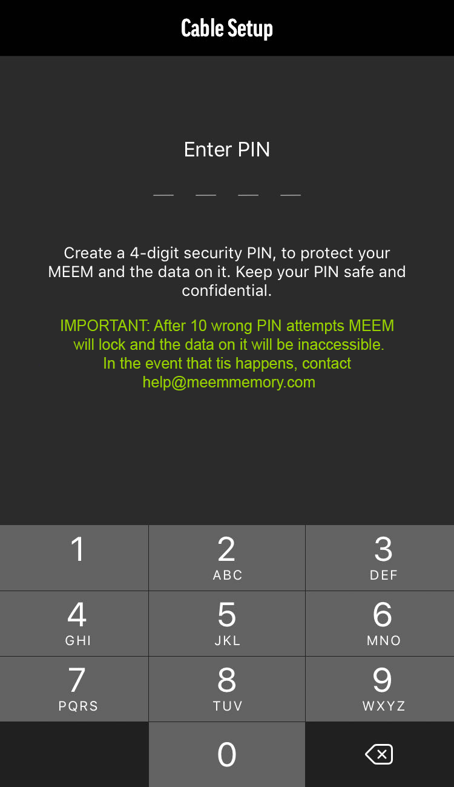

Mis datos personales en MEEM

Tus datos personales guardados en MEEM están protegidos, ya que el cable está encriptado. El único modo de que otra persona tenga acceso desde otro teléfono es si le das tu PIN. Después de 10 intentos erróneos consecutivos de introducir el PIN, el cable se bloqueará. Así que si lo pierdes, no te preocupes. Los datos siempre estarán seguros.
Configurar tu PIN es muy fácil. La primera vez que uses el cable MEEM te pedirá crear un PIN de 4 dígitos. Por seguridad, si conectas un nuevo dispositivo tendrás que introducir tu PIN. POR FAVOR GUARDE SU PIN EN UN LUGAR SEGURO YA QUE ES VITAL PARA USAR MÁS DISPOSITIVOS CON SU CABLE MEEM.
Cuando configure su PIN también se le pedirá que responda a 3 preguntas de seguridad. Debe responder a estas preguntas, ya que le permitirán restablecer su PIN si lo olvida. Si ha olvidado su PIN e intenta añadir otro dispositivo, puede pulsar "Forgot PIN" en la pantalla. Esto le hará las 3 preguntas de seguridad de nuevo. Deberá responder 2 de las preguntas de seguridad para autenticar el cable con su nuevo dispositivo. Una vez que haya autenticado el dispositivo, debe ir al menú Configuración y cambiar su PIN. Por favor, guarde estas respuestas en un lugar seguro para que pueda conectar nuevos dispositivos más tarde si olvida su PIN. Si olvida su PIN y las respuestas de seguridad, no tendrá forma de conectar nuevos dispositivos a su cable.